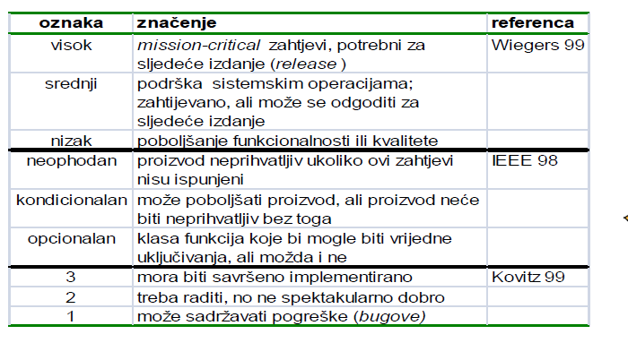

maverick Nije ni uzivo niti na snimljenom videu.
Nekako imam dojam ako stavimo 123 da ce srati jer se ne zna po kojoj ljestvici

Prema slajdu 49 IS03 - ispada da 3 oznacuje visok prioritet, a 1 nizak prioritet
Pa bi ja koristio ili MoSCoW / Visok,srednji,nizak / Vazno, manje vazno
Nemam pojma ni sam sto je najbolje koristiti
Edit: Nisam 100% siguran je li bi prigovarao na ovo 123, to je samo moja pretpostavka - vidim da su kolege i u proslogodisnjoj temi tako oznacavali s tim da su 1 korisitli kao najveci prioritet.
Volio bi da netko tko je bio na predavanjima potvrdi sto je najbolje